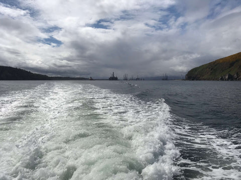
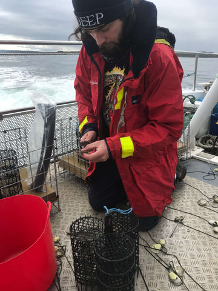
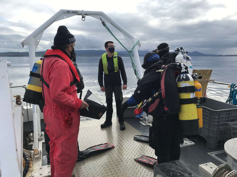
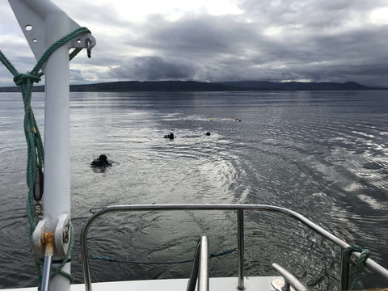
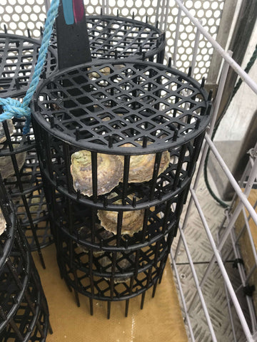
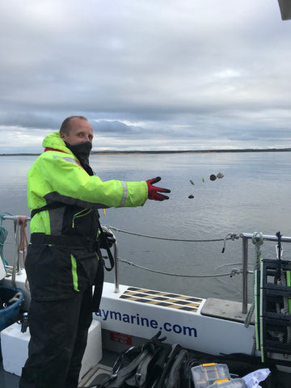

The Importance of Oyster Restoration
Chapter 3 – Reefs & Deployments
June 2021
This is the third instalment in a series of articles that cover our involvement in the Glenmorangie Whisky Company’s DEEP project. This aims to restore a massive European Native oyster reef to the Dornoch Firth, Scotland in front of the distillery.
You can read the introduction article here, and the follow on article covering crucial biosecurity preparation here.
What is an Oyster Reef?
As discussed previously, oysters can be considered to be ‘Ecosystem Engineers’, and play a vital role in the protection of fragile marine ecosystems. They are our seas’ most effective water filters and provide and create habitat for a wide range of our species.

However, oysters are themselves under threat. Over time the growth of the human population has resulted in overfishing, physical damage to benthic habitats, pollution and eutrophication. In addition, Native oyster numbers has been further reduced by diseases such as Bonamia ostreae, which cause over 90% mortality among oysters, when initially introduced into a naïve population.
In a natural setting, the first stage in an oyster’s life is as a free swimming larval. After a few weeks metamorphosis occurs and the larva attaches to a hard substrate, becoming what we would call an oyster. Large numbers of larva often join together or onto other adult oysters and thus an oyster reef is created.
What is Oyster Reef Restoration?
Given where we are right now in terms of the damage that has been done to wild Native oyster populations, natural regeneration of old oyster reefs could take many lifetimes and may not even happen.

It has been observed that following the collapse of the Firth of Forth Native oyster fishery in Scotland, which was one of the largest in the world, in the late 19th and early 20th centuries that the Native oyster population did not recover. By the mid 20th century the Native oyster was determined to be functionally extinct in the Firth of Forth and this remains the case. A sad and tragic state of affairs.
It has been argued that one of the main reasons for this is the change in the marine environment following the removal of the oysters. Healthy reefs containing many tonnes of shells were destroyed. In combination with subtle changes in surrounding land use the reefs were replaced by silt and organic run off which subsequently stifled life and prevented any remaining oysters from repopulating the firth. As any remaining adults reached the end of their natural lives the oyster population became extinct.
This is where oyster reef restoration comes into play. In brief, we need to step in and give the oysters a helping hand by trying to recreate a suitable habitat that allows them start their rebuilding activities.
How can Oyster Reefs be restored?
Now this is the hard bit!
The basic thesis revolves around reintroducing shell material and so modifying the physical characteristics of the target reef site making it more amenable to oysters. In other words, creating suitable habitat.

However, things are not that straightforward and there are a number of challenges that require to be addressed.
Firstly, and most importantly, every target reef site is unique. This means that the composition of the bottom and the water flow patterns are all different. If shell is simply laid down there is every chance that after a hard winter it could simply be washed away. As such, the nature of the site needs to be understood.
Secondly, if the Native oyster are extinct on the target reef site, introducing the first colonists is going to be hard. It needs to be established if they shall even survive any more. Also because they shall more than likely be cultivated animals they shall no longer have their attachment, which can not regrow after it has be broken. This means they could suffer the same fate as any shell that is put in place, i.e. they get washed away never to be seen again!

This is where the science comes in and this ties in neatly with 6K oysters we recently supplied to the Glenmorangie DEEP project.
Oyster Reef Deployment Days
As part of the handover of the 6K oysters we, The Native Oyster & Shellfish Company Ltd, were invited by the project team to come and help deploy the animals.
Early starts were the order of the day, as we were sailing out Cromarty in the Cromarty Firth, a key home of the Scottish Oil and Gas sector, and it was a two hour trip to the deployment site in the Dornoch Firth.

The project team were made up of a team of scientists from Heriot Watt University, Edinburgh. The goal of these days was to monitor and measure what changes had taken place on the seabed and the impact these have had on previously deployed Native oysters and previously deployed scallop shell clutch.
In addition, the team had a suite of new experiments that they were using our oysters for, in order to collect further data on how to plan the next stage of the oyster reef restoration.
The goal is to collect enough data to establish a model for restoration that shall work for the site, and work on a large enough scale to allow 4 million Native oyster colonists to be successfully introduced.
It is worth pointing out that is a big goal, the delivery of which would be a major European, and World, success. This is truly a ground breaking environmental project.

Everything went as planned, and all in all this was a thoroughly enjoyable experience. It was uplifting to feel we are involved in and part of something important.
The highlight of the final return to Cromarty was a fair sky and the company of the Moray Firth dolphins, as they played in the bow wave of the boat.
The Future
For us, it is back to the day job of growing oysters on the farm!
But our role in the restoration of the Native oyster is far from over. We are about to become involved in an exciting new Native oyster genetics project.
For us, as a business, somewhere along the line we have managed to become entangled with the Native oyster. We are still not quite sure how it happened but we are becoming increasingly proud to be involved in efforts to save this precious wee ‘beastie’. We are really keen for all our friends and customers to share in these efforts, even if that just means increasing awareness.
We would encourage you all to share your thoughts on these efforts and ask us questions.